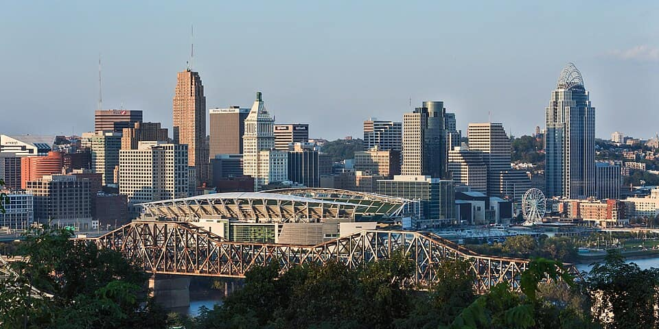
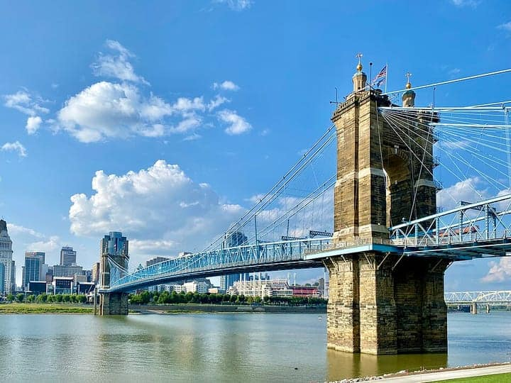
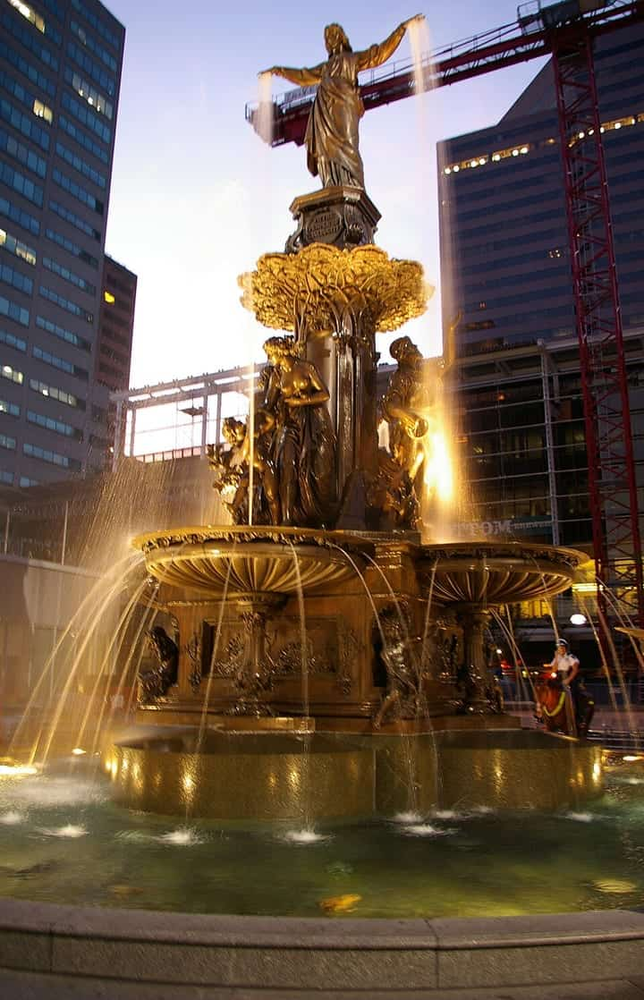
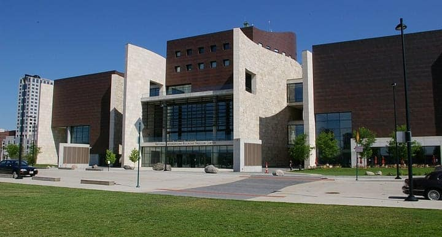
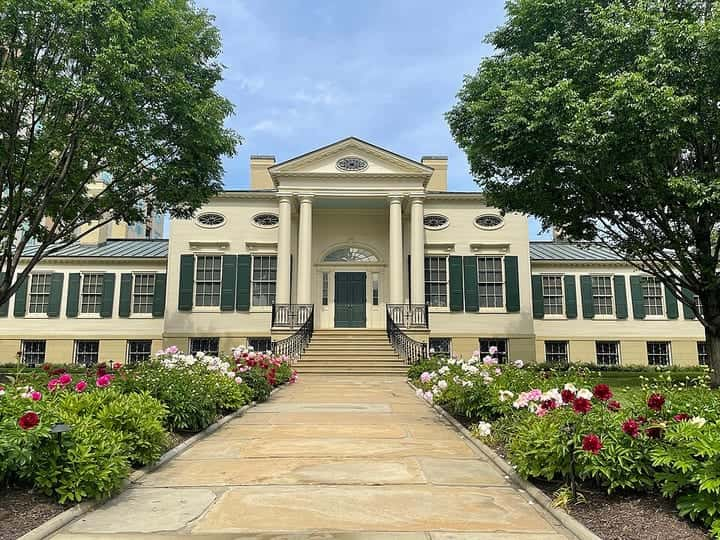
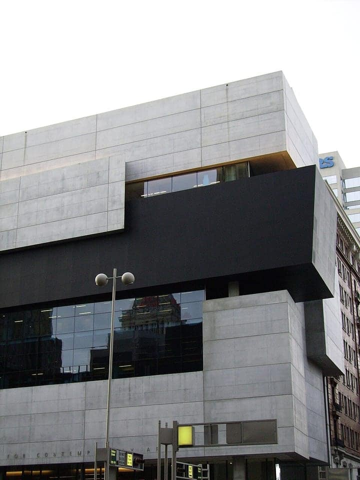

United States
Cincinnati
the Queen City — chili, Over-the-Rhine & the Ohio riverfront
109 places · 7 areas · every one sourced, pinned and status-checked · last checked · 2 closed, kept for the record. Ordered by tier, then by number of named sources. How we choose
chili · goetta · Cincinnati Museum Center at Union Terminal
Start with Skyline Chili (Downtown)

Start with
Cincinnati
the Queen City — chili, Over-the-Rhine & the Ohio riverfront
109 places picked by 18 sources

Downtown & The Banks 22 places · area 1 of 7
-
1 Must see within Downtown & The Banks · Cincinnati chili
Skyline Chili (Downtown)
The defining Cincinnati-chili brand, founded 1949 by Greek immigrant Nicholas Lambrinides. The downtown parlor is the classic city stop for a cheese coney (mustard, chili, mound of cheddar) and the 4-way onion.
1001 Vine St, Cincinnati, OH 45202
Recommended by , , +1,
-
2 Must see within Downtown & The Banks
21c Museum Hotel Cincinnati
A free contemporary-art museum threaded through a boutique hotel in the 1912 Neoclassical Hotel Metropole (on the National Register) — rotating exhibitions open to the public 24/7, plus roaming site-specific installations and the signature yellow penguins.
Your guide’s note Museum is free and open around the clock; docent tours on select days.
609 Walnut St, Cincinnati, OH 45202
Recommended by ,

Photo: w_lemay · CC BY-SA 2.0 · Wikimedia Commons (resized) 3 Must see within Downtown & The Banks
John A. Roebling Suspension Bridge
Opened 1867 as the longest suspension span in the world, John A. Roebling's Ohio River bridge was the prototype for his Brooklyn Bridge; its illuminated cables are Cincinnati's signature riverfront image.
100 W Mehring Way, Cincinnati, OH 45202 (Covington side: 200 Riverside Dr, Covington, KY 41011)
Recommended by ,

Photo: MamaGeek · CC BY-SA 3.0 · Wikimedia Commons (resized) 4 Must see within Downtown & The Banks
Fountain Square & the Tyler Davidson Fountain
The city's civic living room since 1871, anchored by 'The Genius of Water,' Ferdinand von Miller's bronze fountain gifted by Henry Probasco in memory of Tyler Davidson.
520 Vine St, Cincinnati, OH 45202
Recommended by ,

Photo: MamaGeek · CC BY-SA 3.0 · Wikimedia Commons (resized) 5 Must see within Downtown & The Banks
National Underground Railroad Freedom Center
Opened 2004 on the riverfront where escaping slaves crossed the Ohio, this museum tells the story of the Underground Railroad and contemporary freedom struggles, anchored by a rescued slave pen.
50 E Freedom Way, Cincinnati, OH 45202
Recommended by ,
-
6 Must see within Downtown & The Banks
Great American Ball Park & Reds Hall of Fame
Riverfront home of the Cincinnati Reds, baseball's oldest professional franchise, since 2003; the adjoining Reds Hall of Fame & Museum honors the Big Red Machine.
100 Joe Nuxhall Way, Cincinnati, OH 45202
Recommended by ,

Photo: TaftMuseumofArt · CC BY 4.0 · Wikimedia Commons (resized) 7 Must see within Downtown & The Banks
Taft Museum of Art
European old masters (Rembrandt, Turner, Hals, Ingres) plus Chinese porcelains and French Renaissance enamels inside an 1820 Federal mansion with Robert S. Duncanson murals; bequeathed to the city in 1927.
Your guide’s note Historic house museum, small but exceptional; check hours.
316 Pike St, Cincinnati, OH 45202
Recommended by ,

Photo: Lanskeith17 · Public domain · Wikimedia Commons (resized) 8 Must see within Downtown & The Banks
Contemporary Arts Center
Zaha Hadid's 2003 Lois & Richard Rosenthal Center — the first American art museum designed by a woman, an internationally studied piece of architecture at 6th & Walnut.
Your guide’s note Rotating contemporary shows; the building itself is the draw.
44 E 6th St, Cincinnati, OH 45202
Recommended by ,
-
9 Must see within Downtown & The Banks
Boca
David Falk's flagship in the old Maisonette space — award-winning European cooking with French precision; Cincinnati Magazine's No. 1 Best Restaurant.
114 E 6th St, Cincinnati, OH 45202
Recommended by ,
-
10 Must see within Downtown & The Banks
Sotto
Candlelit subterranean Italian below Boca — famed short rib cappellacci and truffle-season tajarin; Cincinnati Magazine No. 3 Best Restaurant.
118 E 6th St, Cincinnati, OH 45202
Recommended by ,
-
11 Must see within Downtown & The Banks
Mita's
Chef Jose Salazar's Spanish/Latin American tapas room named for his Colombian grandmother; Salazar is a James Beard nominee/finalist.
501 Race St, Cincinnati, OH 45202
Recommended by ,
-
12 Must see within Downtown & The Banks · Mexican & Latin
Nada
David Falk's upscale modern-Mexican room on the Aronoff plaza — reimagined menu and one of downtown's best patios (confirmed open 2025).
600 Walnut St, Cincinnati, OH 45202
Recommended by ,
-
13 Worth the detour within Downtown & The Banks
Weston Art Gallery
The Aronoff Center's free, street-level contemporary gallery — Cincinnati's premier showcase for emerging and established local and regional artists across all media.
Your guide’s note Free admission; open around Aronoff performance hours — check the schedule.
650 Walnut St, Cincinnati, OH 45202
Recommended by ,
-
14 Worth the detour within Downtown & The Banks
Paycor Stadium
The riverfront home of the NFL's Cincinnati Bengals since 2000 (formerly Paul Brown Stadium), part of the downtown sports-and-Banks corridor.
1 Paycor Stadium, Cincinnati, OH 45202
Recommended by ,
-
15 Worth the detour within Downtown & The Banks
TQL Stadium
FC Cincinnati's $250M soccer-specific stadium in the West End, opened 2021, known for a translucent LED-lit facade and one of MLS's loudest atmospheres.
1501 Central Pkwy, Cincinnati, OH 45214
Recommended by ,
-
16 Worth the detour within Downtown & The Banks
Smale Riverfront Park & Carol Ann's Carousel
A landscaped riverfront park between the ballpark and stadium with swings, water features and Carol Ann's Carousel, whose 44 hand-carved animals honor Cincinnati history.
166 W Mehring Way, Cincinnati, OH 45202
Recommended by ,
-
17 Worth the detour within Downtown & The Banks
Sawyer Point & the Serpentine Wall
A mile of riverfront park at Yeatman's Cove where the stepped Serpentine Wall (1976) descends to the Ohio, a classic spot to sit and watch the river and the Kentucky skyline.
705 E Pete Rose Way, Cincinnati, OH 45202
Recommended by ,
-
18 Worth the detour within Downtown & The Banks
The Banks
An 18-acre mixed-use riverfront district tucked between the ballpark and Paycor Stadium, tying together restaurants, bars and residences alongside Smale Park and the Freedom Center.
150 E Freedom Way, Cincinnati, OH 45202
Recommended by ,
-
19 Worth the detour within Downtown & The Banks
Cincinnati Fire Museum
200+ years of firefighting history in the restored 1906 Court Street Firehouse — Cincinnati created the nation's first paid professional fire department in 1853.
Your guide’s note Housed in a National Register 1906 firehouse; limited hours.
315 W Court St, Cincinnati, OH 45202
Recommended by ,
-
20 Worth the detour within Downtown & The Banks
Isaac M. Wise (Plum Street) Temple
One of the best-preserved Moorish Revival buildings in the US (1866), a National Historic Landmark tied to Reform Judaism founder Rabbi Isaac Mayer Wise.
Look for Active synagogue; interior by tour/arrangement.
720 Plum St, Cincinnati, OH 45202
Recommended by ,
-
21 Worth the detour within Downtown & The Banks
Cathedral Basilica of St. Peter in Chains
Greek Revival 'White Angel' cathedral (1845) at 8th & Plum with a soaring spire and mosaic interior, seat of the Archdiocese of Cincinnati.
Look for Active cathedral; open for visits around services.
325 W 8th St, Cincinnati, OH 45202
Recommended by ,
-
Closed — kept for the record, checked 2026-10-16 22
Carew Tower Observation Deck — CLOSED
The 49th-floor open-air deck atop the 1931 Art Deco Carew Tower (by the Empire State Building's architects) long gave the best downtown-and-river panorama.
Your guide’s note Deck closed as of 2026 during the tower's conversion to apartments; slated to reopen but no date announced. The building's ground-floor Art Deco arcade remains accessible.
441 Vine St, Cincinnati, OH 45202
Recommended by ,

Over-the-Rhine & Pendleton 13 places · area 2 of 7
-
1 Must see within Over-the-Rhine & Pendleton · German & goetta
Eckerlin Meats
An old-fashioned Findlay Market butcher, family-run since 1852, voted Cincinnati's Best Goetta and selling 400-500 lbs a week — the goetta many city diners (including Tucker's) buy to griddle. Grab a loaf plus the house mettwurst.
116 W Elder St, Cincinnati, OH 45202
Recommended by , ,
-
2 Must see within Over-the-Rhine & Pendleton · Asian
Pho Lang Thang
Cincinnati's standout Vietnamese kitchen, grown from a Findlay Market stall (2011) to a full Race Street room with a bar. 20-hour broth from Ohio Sakura Farms Wagyu, lemongrass grilled pork, sharp banh mi.
1828 Race St, Cincinnati, OH 45202
Recommended by , ,

Uptown 5 places · area 3 of 7
Clifton, Corryville & CUF

East Side 30 places · area 4 of 7
Hyde Park, Oakley, Mt. Lookout

West Side & Northside 12 places · area 5 of 7

Northern Suburbs 10 places · area 6 of 7
Blue Ash, Montgomery, Mason

Northern Kentucky 17 places · area 7 of 7
Covington, Newport, Bellevue
How we choose
Every place is recommended by named sources (review-aggregator star ratings never count as the recommender), pinned to its door from a published coordinate, and status-checked. Closed places stay, flagged, so you know they’re gone.
- Must see
- The places to plan a visit around — graded within each area, not across the city.
- Worth the detour
- Strong picks, worth going out of your way for.
- Deep cut
- For the curious: smaller, odder, more local.
Within each area, places are ordered by tier, then by number of named sources — never by popularity. We don’t add ratings, prices or opening hours of our own. Any quoted in a write-up are the source’s, dated.
Follow changes — an RSS feed of every closure and status check in this guide, for any feed reader.
68 sights and 41 places to eat across Cincinnati and the Northern Kentucky riverfront, each traceable to the source that named it. The city’s food canon is its own: Cincinnati chili (Skyline, Camp Washington), goetta, Montgomery Inn ribs, Findlay Market, Graeter’s ice cream and the German brewing heritage of Over-the-Rhine.
Take Cincinnati with you
Every place, its sources, the Guidebook and the photos at a small size. Map tiles are not saved: offline, the map shows our own pin schematic and every place stays listed.